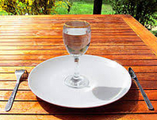

Je jeûne tous les mardis depuis quelques mois. Je ne mange rien du lundi soir au mercredi matin. Je bois juste de l’eau et du thé (sans sucre, ni lait, ni miel). Récemment, j’ai juste changé une règle: je jeûne du lundi soir (pas de dîner) au mardi soir (environ 24h). La raison est pragmatique: dormir le ventre creux est difficile, ce qui résultait en une journée peu productive le mercredi à cause de la fatigue.

J’ai toujours été plutôt en bonne forme et ça n’a changé en rien depuis que je jeûne. Seulement une impression (subjective) que mon corps se régule mieux au niveau digestif.
En revanche, j’ai noté beaucoup d’effets bénéfiques indirects:
# Jeûner m’a aidé à développer des stratégies pour résister à l’appel de la nourriture malsaine (gâteaux, frites, etc..). J’ai appris à me contrôler et résister beaucoup plus facilement. Maintenant, c’est plutôt facile pour moi de me dire “non” ou “stop” et de m’écouter.
# Jeûner m’a appris que manger 3 fois par jour, ce n’est pas vital et pas forcément optimal non plus. Je peux même faire la même quantité de sport que d’habitude après 24h sans manger.
# J’apprécie beaucoup plus chaque bouchée et je mange plus lentement.
# Avoir faim aide à relativiser sur les autres problèmes de la vie quotidienne et prendre (beaucoup) de recul.
# Chaque mardi est un challenge et j’aime la compétition avec moi-même. C’est un moyen d’être en dehors de sa zone de confort. Bref, je retire une satisfaction personnelle de ce jeûne.
# Chaque mardi, j’ai faim, donc pour penser à autre chose, je me concentre davantage sur mon travail. Chaque mardi, je suis donc beaucoup plus productif que n’importe quel autre jour!
Au final, je recommande donc le jeûne s’il est pratiqué avec attention et pour des objectifs tels que les miens. Par exemple, je ne pense pas que ce soit une bonne solution pour perdre du poids. Pour répondre plus concrètement à ta question, je n’ai noté aucun effet négatif sur mon corps et selon certaines études, il y aurait effectivement d’autres effets bénéfiques (direct) notamment sur la santé ( Jeûne ).